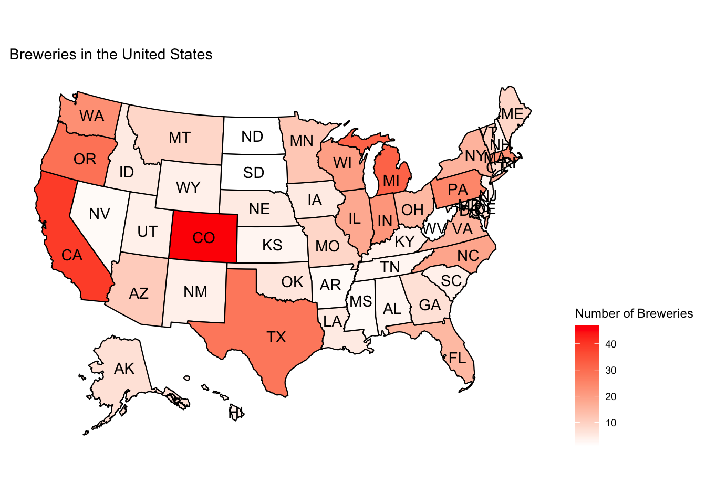
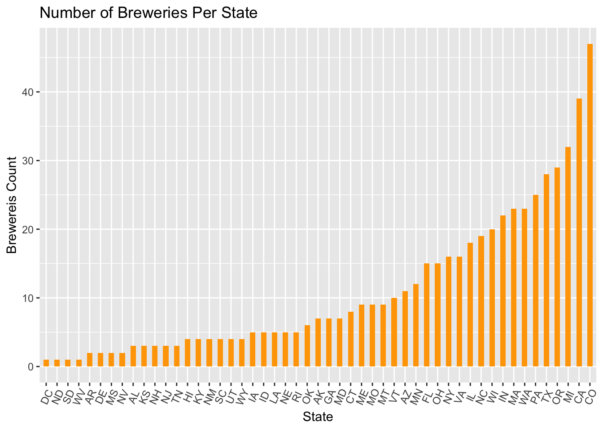
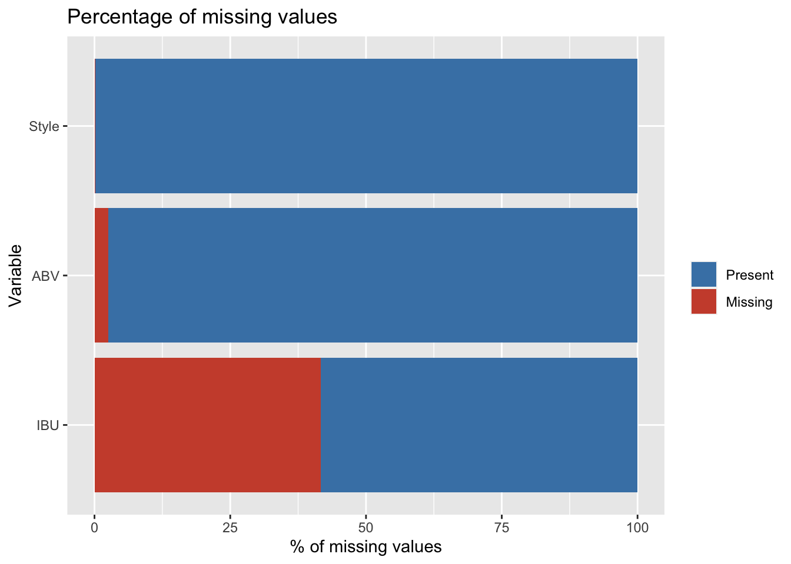
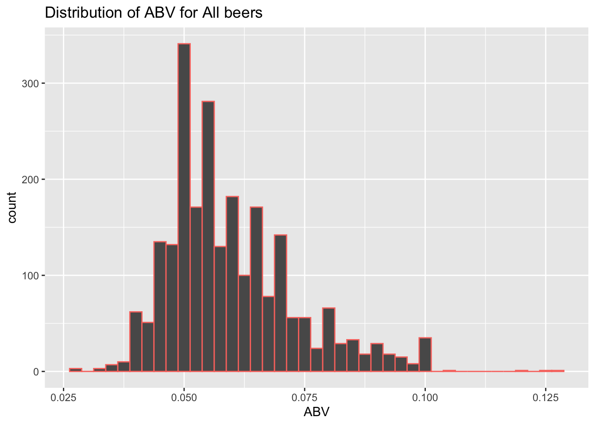
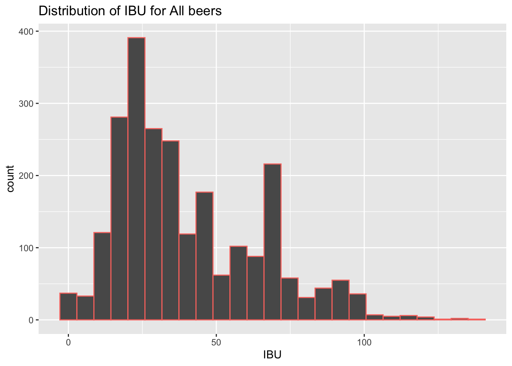
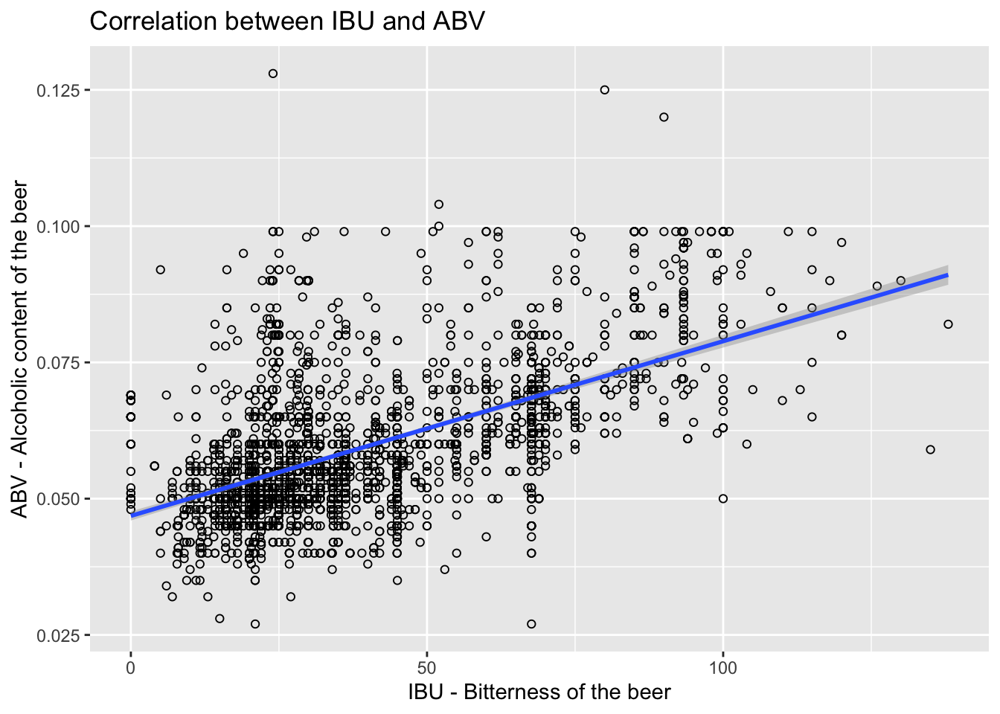
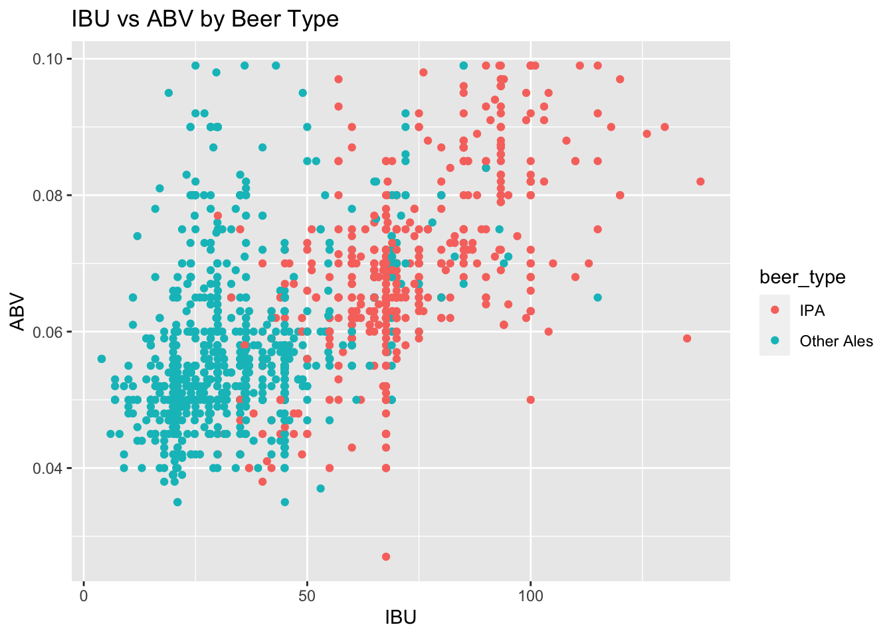
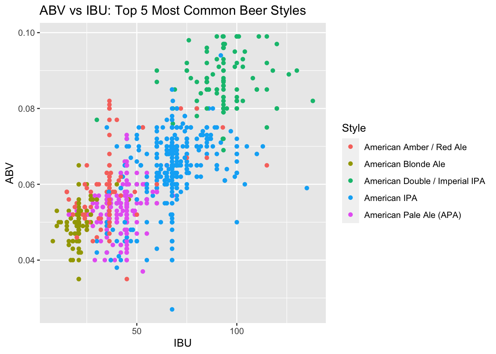

We will be exploring a data set of various beers and breweries provided by Anheuser Busch to assess the relationship between International Bitterness Units (IBU) and Alcohol By Volume (ABV) and how they relate to styles of beer. We will also seek to share other insights from this data related to IBU and ABV such as which beers have the highest IBU and ABV.
# read data
beer<-read.csv("Beers.csv", stringsAsFactors = FALSE)
breweries<-read.csv("Breweries.csv", stringsAsFactors = FALSE)The top three states with the most breweries in our data set are California, Colorado, and Michigan. It is not surprising for California to top this list due to their population but Colorado and Michigan have considerably lower populations yet still maintain a higher number of breweries indicating that population is not the only factor that determines the number of breweries in a state. It’s likely that certain cultural and economic aspects of the population influence the number of breweries in that state as well. Furthermore, the map of the US shows that Breweries do not dominate any particular region of the US.
breweries$State <- trimws(breweries$State)
# use lat/lon data from us_map package to estomate center of state
coordinates<-us_map(regions = "states")
coordinates = coordinates %>% dplyr::group_by(abbr) %>%
dplyr::summarize(Lat = mean(y), Lon = mean(x))
#sum breweries by state. "fips" is a key for us states
state_breweries<-breweries %>% dplyr::group_by(State) %>%
dplyr::summarise(Count_of_Breweries = n()) %>%
dplyr::mutate(fips = fips(State)) %>%
inner_join(coordinates, by=c("State" = "abbr"))
#plot us map
plot_usmap(data=state_breweries, values="Count_of_Breweries", color="black", labels=TRUE) +
scale_fill_continuous(low="white", high="red", name="Number of Breweries") +
theme(legend.position = "right") +
ggtitle("Breweries in the United States")
# bar chart of states
breweries %>% dplyr::group_by(State) %>%
dplyr::summarize(count = n()) %>%
ggplot(aes(x=reorder(State, count), y = count)) +
geom_bar(stat="identity", width=.5, fill="orange") +
labs(title="Number of Breweries Per State",
x = "State",
y = "Brewereis Count") +
theme(axis.text.x = element_text(angle=65, vjust=0.6))
IBU are not regularly reported for beers indicated in the plot below. Very few measurements of Alcohol by Volume are missing but missing IBU accounts for about 40% of all beers in this data set.
#Force any empty strings to become NA.
#Style is the only character vector with empty strings
beer_merged$Style[beer_merged$Style==""]=NA
#Create data frame for missing values plot
missing_values2 <- beer_merged %>%
gather(key = "key", value = "val") %>%
dplyr::mutate(isna = is.na(val)) %>%
dplyr::group_by(key) %>%
dplyr::mutate(total = n()) %>%
dplyr::group_by(key, total, isna)%>%
dplyr::summarise(num.isna = n())%>%
dplyr::mutate(pct = num.isna / total * 100)
levels <- (missing_values2 %>% filter(isna == T) %>% arrange(desc(pct)))$key
#plot percentage of missing values
percentage.plot <- missing_values2 %>%
ggplot() + geom_bar(aes(x = reorder(key, desc(pct)), y = pct, fill=isna), stat = 'identity', alpha=1) +
scale_x_discrete(limits = levels) +
scale_fill_manual(name = "", values = c('steelblue', 'tomato3'), labels = c("Present", "Missing")) +
coord_flip() +
labs(title = "Percentage of missing values", x = 'Variable', y = "% of missing values")
percentage.plot
#Create table for missing values
missing_values<-sort(sapply(beer_merged, function(x) sum(is.na(x))), decreasing = T)
missing_values %>% kable("html") %>% kable_styling()| x | |
|---|---|
| IBU | 1005 |
| ABV | 62 |
| Style | 5 |
| beer_name | 0 |
| Beer_ID | 0 |
| Brewery_id | 0 |
| Ounces | 0 |
| brewery_name | 0 |
| City | 0 |
| State | 0 |
The missing values for IBU and ABV do not necessarily represent a zero value. We will replace missing IBU and ABV with the average IBU and average ABV for their respective Style. In the case of Ciders, we have 37 beers in our data set with no IBUs so we will assume these IBUs are actually zero. For the eight remaining styles that have no IBUs reported (Mead, Rauchbier, Kristalweizen, Flanders Red Ale, Shandy, American Malt Liquor, Braggot, Low Alcohol Beer), its unclear if these IBUs are actually non-zero so we will omit these which results in dropping only 15 beers from our data set.
#drop beers with no style
beer_merged <- beer_merged[!is.na(beer_merged$Style),]
replaceNAs<-beer_merged %>%
dplyr::select(Style, ABV, IBU) %>%
dplyr::group_by(Style) %>%
dplyr::summarise(meanABV=mean(ABV, na.rm=TRUE), meanIBU=mean(IBU, na.rm=TRUE))
#replace missing ABV with mean ABV per Style
beer_merged<-left_join(beer_merged, replaceNAs, by="Style")
beer_merged$ABV[is.na(beer_merged$ABV)]=beer_merged$meanABV[is.na(beer_merged$ABV)]
#replace missing IBU with mean IBU per Style
beer_merged$IBU[is.na(beer_merged$IBU)]=beer_merged$meanIBU[is.na(beer_merged$IBU)]
#For Cider IBU=0
beer_merged$IBU[beer_merged$Style=="Cider"]=0
#Drop the remaining styles with no IBUs listed for any beers.
beer_merged<- beer_merged[!is.na(beer_merged$IBU),]The state with the highest median ABV is Kentucky while the highest IBU is Delaware. In general, the median IBU does not change considerably across States. A couple exceptions to this are New Jersey And Utah which seem to drop off significantly in ABV at the end of the plot. Median IBU has a much larger range across States than ABV. States like Delaware, West Virginia, and Minnesota tend to prefer more bitter beers while states like New Hampshire and Wyoming prefer less bitter. There is no apparent geographical pattern to explain these differences. Further data gathering would need to be done for each state to determine the reason for these differences.
medians = data.frame(beer_merged %>% dplyr::group_by(State) %>%
dplyr::summarize(median_ABV = median(ABV), median_IBU = median(IBU)))
medABVPlot = medians %>% ggplot(aes(x = reorder(State,-median_ABV), y = median_ABV, fill = State )) +
geom_col() +
ggtitle("Median Alcohol Content of Beers by State") +
xlab("State") +
ylab("Median ABV") +
theme(axis.text.x = element_text(angle=65, vjust=0.6))
medIBUPlot = medians %>% ggplot(aes(x = reorder(State,-median_IBU), y = median_IBU, fill = State)) +
geom_col() +
ggtitle("Median Bitterness of Beers by State") +
xlab("State") +
ylab("Median IBU") +
theme(axis.text.x = element_text(angle=65, vjust=0.6))
ggplotly(medABVPlot)ggplotly(medIBUPlot)The tables below show the top 5 beers in our data set in terms of ABV and IBU. Two of the top 5 ABV beers are located in Boulder, CO but all five beers are a different style. The top 5 beers in terms of IBU are all a variation of an American IPA.
kable(head(beer_merged[order(-beer_merged$ABV),c(1,6,8,9,10,4,3)], n=5), caption = "Top 5 ABV Beers") %>%
kable_styling()| beer_name | Style | brewery_name | City | State | IBU | ABV | |
|---|---|---|---|---|---|---|---|
| 2274 | Lee Hill Series Vol. 5 - Belgian Style Quadrupel Ale | Quadrupel (Quad) | Upslope Brewing Company | Boulder | CO | 24 | 0.128 |
| 71 | London Balling | English Barleywine | Against the Grain Brewery | Louisville | KY | 80 | 0.125 |
| 2185 | Csar | Russian Imperial Stout | Tin Man Brewing Company | Evansville | IN | 90 | 0.120 |
| 2275 | Lee Hill Series Vol. 4 - Manhattan Style Rye Ale | Rye Beer | Upslope Brewing Company | Boulder | CO | 52 | 0.104 |
| 1853 | 4Beans | Baltic Porter | Sixpoint Craft Ales | Brooklyn | NY | 52 | 0.100 |
kable(head(beer_merged[order(-beer_merged$IBU),c(1,6,8,9,10,4,3)], n=5),caption = "Top 5 IBU Beers") %>%
kable_styling()| beer_name | Style | brewery_name | City | State | IBU | ABV | |
|---|---|---|---|---|---|---|---|
| 148 | Bitter Bitch Imperial IPA | American Double / Imperial IPA | Astoria Brewing Company | Astoria | OR | 138 | 0.082 |
| 2386 | Troopers Alley IPA | American IPA | Wolf Hills Brewing Company | Abingdon | VA | 135 | 0.059 |
| 526 | Dead-Eye DIPA | American Double / Imperial IPA | Cape Ann Brewing Company | Gloucester | MA | 130 | 0.090 |
| 594 | Bay of Bengal Double IPA (2014) | American Double / Imperial IPA | Christian Moerlein Brewing Company | Cincinnati | OH | 126 | 0.089 |
| 2077 | Abrasive Ale | American Double / Imperial IPA | Surly Brewing Company | Brooklyn Center | MN | 120 | 0.097 |
The average ABV of all beers is 5.97% while the median is 5.64% indicating a slightly right-skewed distribution. The histogram below reflects this as well. Most beers appear to hover around the mean ABV with a few potential outliers with higher ABVs. IBU on the other hand has a more complex distribution that may be bi-modal seen by the two separate spikes. Our interpretation is that two types of consumers may exist in terms of IBU. That is, consumers who seek out bitter beers versus those who don’t. It’s important to note which type of consumer you are trying to market to when creating a new beer.
summary(beer_merged$ABV)## Min. 1st Qu. Median Mean 3rd Qu. Max.
## 0.02700 0.05000 0.05600 0.05974 0.06700 0.12800beer_merged %>% ggplot(aes(x=ABV, color="Orange")) +
geom_histogram(binwidth=0.0025) +
ggtitle("Distribution of ABV for All beers") +
theme(legend.position = "none")
summary(beer_merged$IBU)## Min. 1st Qu. Median Mean 3rd Qu. Max.
## 0.00 21.78 33.81 40.27 59.50 138.00beer_merged %>% ggplot(aes(x=IBU, color="white")) +
geom_histogram(bins=25) +
ggtitle("Distribution of IBU for All beers") +
theme(legend.position = "none")
The scatter plot below shows a positive linear relationship between ABV and IBU for all beers. Our test results produce a correlation value of 0.58 on a scale of -1 to 1 which is statistically significantly different from zero (p value ~ 0). Furthermore, we are 95% confident that the true correlation value is between 0.55 and 0.61.
ggplot(beer_merged, aes(x=IBU, y= ABV)) +
geom_point(shape=1) +
geom_smooth(method=lm) + # add linear regression line
ggtitle("Correlation between IBU and ABV") +
labs(x="IBU - Bitterness of the beer",y="ABV - Alcoholic content of the beer")
# Pearson's product-moment correlation
df<-unlist(cor.test(beer_merged$ABV,beer_merged$IBU))
data.frame(Correlation_Value = round(as.numeric(unname(df[4])),2), P_Value = round(as.numeric(unname(df[3])),2))## Correlation_Value P_Value
## 1 0.58 0ABV and IBU are defining characteristics of beer and its style. In this section, we will explore a classification model known as K-Nearest Neighbors (KNN) to predict which beers are IPAs or another type of Ale. The scatter plot below suggetss that a grouping of Ales and IPAs exists in terms of ABV and IBU.
beer_merged$beer_type <- ifelse(grepl("\\bale\\b", beer_merged$Style, ignore.case = T), "Other Ales",
ifelse(grepl("\\bIPA\\b", beer_merged$Style, ignore.case = T ), "IPA", "Other"))
#Change BeerType to a factor and IBU/ABV to numeric
beer_merged$beer_type = as.factor(beer_merged$beer_type)
# When looking at the beers by ounces, it appears that IPAs have higher median ABV values than other Ales.
#Selecting for only IPAs and Other Ales.
BrewPubIPAOther = beer_merged %>% filter(!is.na(beer_type) & !is.na(IBU) &!is.na(ABV)) %>%
filter(beer_type == "IPA" | beer_type == "Other Ales")
BrewPubIPAOther = droplevels(BrewPubIPAOther, exclude = "Other")
BrewPubIPAOther %>% ggplot(aes(x=IBU, ABV, color = beer_type)) + geom_point() + ggtitle("IBU vs ABV by Beer Type")
We will build a KNN model using ABV and IBU. The method of KNN looks at a specified number of beers, “k”, located near the beer of interest in terms of ABV and IBU so that those that are close in ABV and IBU will be grouped accordingly. The choice of “k” was determined by running our model 100 times and choosing the value with the best accuracy. The confusion matrix below represents the predictions by the KNN model as columns and the actual beer type as rows.
# Split data into test/train and build KNN
set.seed(1000)
iterations = 100
splitPerc = .70
trainIndices = sample(1:dim(BrewPubIPAOther)[1],round(splitPerc * dim(BrewPubIPAOther)[1]))
train = BrewPubIPAOther[trainIndices,]
test = BrewPubIPAOther[-trainIndices,]
# peform 100 iterations to find the best K value for KNN
accs = data.frame(accuracy = numeric(iterations), k = numeric(iterations))
for(i in 1:iterations)
{
classifications = knn(train[,c(4,5)],test[,c(4,5)],train$beer_type, prob = TRUE, k = i)
table(test$beer_type,classifications)
CM = confusionMatrix(table(test$beer_type,classifications))
accs$accuracy[i] = CM$overall[1]
accs$k[i] = i
}
#plot used for reviewing K values. Max is chosen for final model
#plot(accs$k,accs$accuracy, type = "l", xlab = "k", ylab="Accuracy")
# Classify AlesIPAs with KNN; k=25 achieves the max accuracy
classifications = knn(train[,c(4,5)],test[,c(4,5)],train$beer_type, prob = TRUE, k = accs$k[which.max(accs$accuracy)])
CM = confusionMatrix(table(test$beer_type,classifications))
knn_results<-data.frame(Model="KNN for Ale/IPA",
Accuracy=CM$overall[1],
Sensitivity=CM$byClass[1],
Specificity=CM$byClass[2])
kable(table(test$beer_type,classifications),caption="Confusion Matrix for Classifying Beer Type (Columns are Predictions)") %>% kable_styling()| IPA | Other Ales | |
|---|---|---|
| IPA | 156 | 20 |
| Other Ales | 30 | 254 |
kable(knn_results) %>% kable_styling()| Model | Accuracy | Sensitivity | Specificity | |
|---|---|---|---|---|
| Accuracy | KNN for Ale/IPA | 0.8913043 | 0.8387097 | 0.9270073 |
The overall accuracy of the mode, that is the percentage of correct matches, is 89% which is fairly successful. It is clear that IPAs can be accurately distinguished from other types of Ales in terms of ABV and IBU. More specifically, IPAs tend to be more bitter and more alcoholic than their Ale counterparts. IN the next section, we will explore further classification of beer styles beyond IPAs.
We have selected the top 5 most common styles of beers in our dataset seen below. In essence, these are the most popularly brewed beers and we wish to determine if it’s possible to classify these beers by their style using ABV and IBU similar to the previous section. The scatter plot below suggests some obvious grouping of IPA, Imperial IPA, and Pale Ales, but beyond those styles, there is quite a bit of overlap that may make it difficult to classify.
beers_topfive<-beer_merged %>%
subset(Style %in% c("American IPA",
"American Pale Ale (APA)",
"American Amber / Red Ale",
"American Blonde Ale",
"American Double / Imperial IPA" ))
#Change BeerType to a factor and IBU/ABV to numeric
beers_topfive$Style = as.factor(beers_topfive$Style)
# table for top 5 most common beers
beers_topfive %>% group_by(Style) %>%
summarise(Count = n()) %>%
arrange(-Count) %>%
kable(caption = "Top 5 Most Common Beer Styles") %>%
kable_styling()| Style | Count |
|---|---|
| American IPA | 424 |
| American Pale Ale (APA) | 245 |
| American Amber / Red Ale | 133 |
| American Blonde Ale | 108 |
| American Double / Imperial IPA | 105 |
# Create scatter plot for top 5 beers
beers_topfive %>% ggplot(aes(x=IBU, ABV, color = Style)) +
geom_point() +
ggtitle("ABV vs IBU: Top 5 Most Common Beer Styles") 
Again we will use a KNN model with the value of K selected by repeating the process 100 times and finding the k value that achieves the best accuracy. The results of the model are seen below.
# Split data into test/train and build KNN
set.seed(1000)
iterations = 100
splitPerc = .70
trainIndices = sample(1:dim(beers_topfive)[1],round(splitPerc * dim(beers_topfive)[1]))
train = beers_topfive[trainIndices,]
test = beers_topfive[-trainIndices,]
accs = data.frame(accuracy = numeric(iterations), k = numeric(iterations))
for(i in 1:iterations)
{
classifications = knn(train[,c(4,5)],test[,c(4,5)],train$Style, prob = TRUE, k = i)
table(test$Style,classifications)
CM = confusionMatrix(table(test$Style,classifications))
accs$accuracy[i] = CM$overall[1]
accs$k[i] = i
}
#plot used to review best K values
#plot(accs$k,accs$accuracy, type = "l", xlab = "k", ylab="Accuracy")
# Classify Top 5 beers in test set with KNN; k=5 achieves the max accuracy
classifications = knn(train[,c(4,5)],test[,c(4,5)],train$Style, prob = TRUE, k = accs$k[which.max(accs$accuracy)])
CM = confusionMatrix(table(test$Style,classifications))
knn_results<-data.frame(
BeerStyle=c( "American Amber / Red Ale",
"American Blonde Ale",
"American Double / Imperial IPA",
"American IPA",
"American Pale Ale (APA)"),
Balanced_Accuracy=c(CM$byClass[1,11], CM$byClass[2,11], CM$byClass[3,11], CM$byClass[4,11], CM$byClass[5,11])
)
kable(table(test$Style,classifications), caption="Confusion Matrix for Classifying Beer Style (Columns are Predictions)") %>% kable_styling()| American Amber / Red Ale | American Blonde Ale | American Double / Imperial IPA | American IPA | American Pale Ale (APA) | |
|---|---|---|---|---|---|
| American Amber / Red Ale | 14 | 10 | 0 | 6 | 13 |
| American Blonde Ale | 6 | 20 | 0 | 0 | 1 |
| American Double / Imperial IPA | 0 | 1 | 23 | 11 | 1 |
| American IPA | 2 | 0 | 11 | 102 | 8 |
| American Pale Ale (APA) | 7 | 3 | 0 | 9 | 57 |
kable(knn_results) %>% kable_styling()| BeerStyle | Balanced_Accuracy |
|---|---|
| American Amber / Red Ale | 0.6888431 |
| American Blonde Ale | 0.7812025 |
| American Double / Imperial IPA | 0.8142501 |
| American IPA | 0.8391155 |
| American Pale Ale (APA) | 0.8140278 |
Our confusion matrix now contains 5 possible styles to choose from for each beer where the columns represent the Style chosen by the model, and the rows are the actual Styles taken from the data set. Finally, the results are summarised using a Balanced Accuracy measurement for each Style to show how well our model does at classifying each Style. As we expected from the visual inspection of the Scatter plot, the model is more capable of classifying American IPA, American Imperial IPA, and American Pale Ales than the rest due to the significant overlapping that occurs in lower ABV and IBU beers. Ultimately, beers such as IPAs and Double IPAs are characterized by their IBU and ABV content.
This report has presented our findings from an exploratory dat analysis of various beers and breweries across the United States. We focused on insights using ABV and IBU, their relationship, and classifications. Some of our key takeaways are shown below. <<<<<<< HEAD
No obvious regional patterns in the US of brewery locations
IBU is not regularly reported and must be inferred from Styles or other methods when doing analysis.
There is a Positive linear relationship between IBU and ABV
A Bi-modal distribution of IBU may indicate two different consumer markets
Not all styles of beer can be accurately classified by IBU/ABV
Finally, we would like to mention a few areas of further research that could help gain more insight into some of of our findings
More advanced methods for determining IBU when they are not reported b the Brewery.
Distribution/Sales data to determine where the beer is being shipped
Demographics and economic data to gain insight into the culture of states that drive beer sales and production.